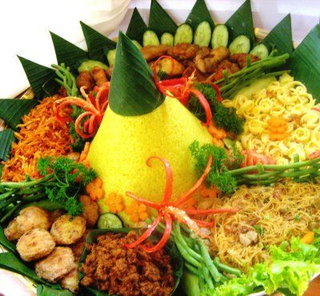
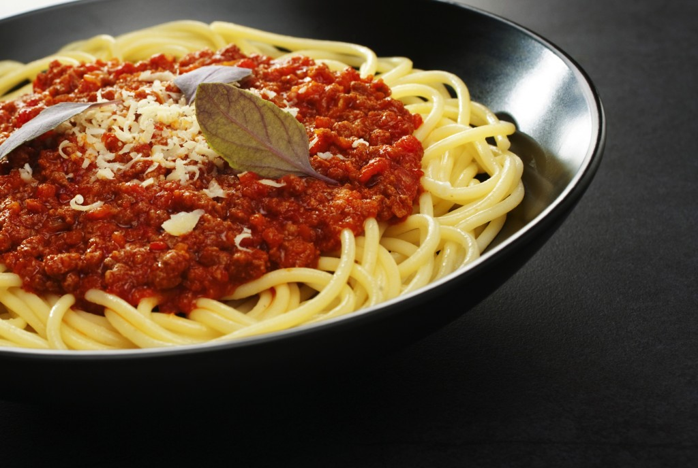
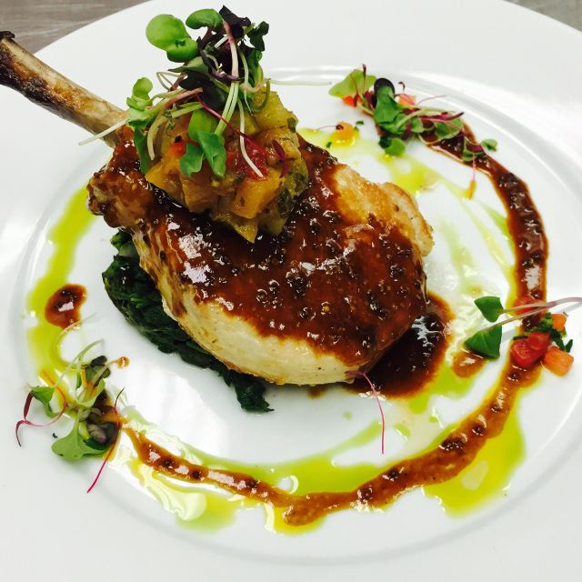

|  |
Masakan Indonesia
Mulai dari negeri sendiri, ada banyak makanan yang dapat dipelajari, dari makanan yang
sudah terkenal rasanya di dunia seperti rendang dan sate, ataupun makanan sehari seperti
nasi kuning
|
 |
Masakan Jepang
Masuk ke kuliner internasional yang cukup terkenal di Asia, yaitu Jepang. Banyak makanan
Jepang yang sudah dikenal masyarakat Indonesia seperti ramen, udon, dan lainnya. Mungkin
akan menjadi pengalaman yang seru untuk mempelajarinya.
|
|  |
Masakan italia
Selanjutnya beralih ke Eropa, yaitu Italia. Tempat yang menjadi awal pasta dan pizza yang
sudah banyak kita temui di restoran. Walaupun terlihat sulit tapi masakan Italia sebenarnya
cukup mudah dibuatnya, tertarik mencoba?
|
|  |
Masakan Prancis
Pindah ke tetangga Italia, yaitu Prancis. Selain terkenal dengan bidang fashion, Prancis juga
terkenal dengan kulinernya yang dapat dikategorikan mewah. Jika ingin mencoba menjadi koki restoran
dengan bintang Michelin, kuliner Prancis merupakan hal yang tepat untuk dicoba.
|